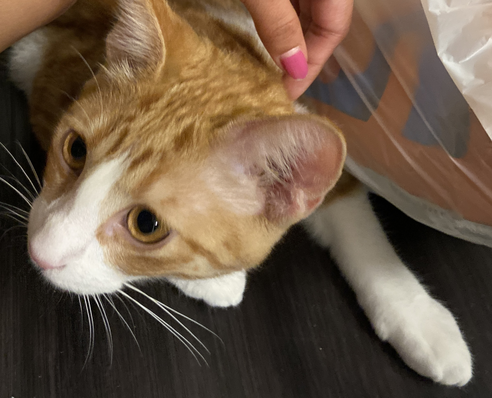
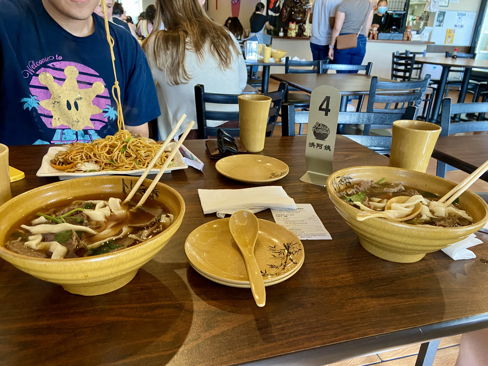
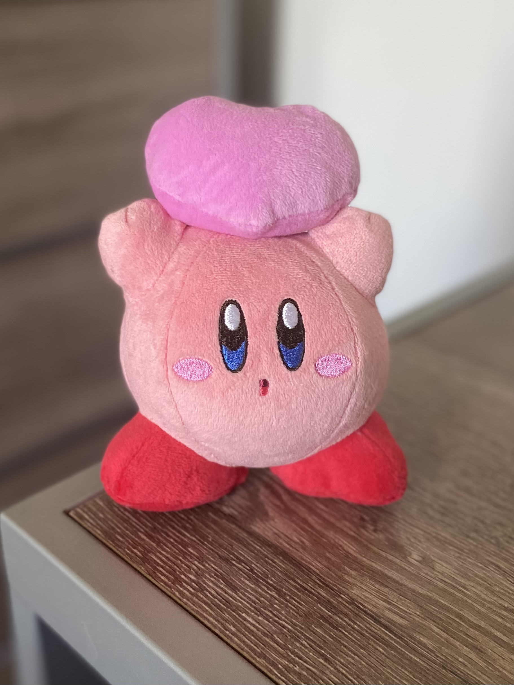

Headlines of the Day
| Scientists Discover That Cats Extend Your Lifespan |  |
|---|---|
A study conducted at the University of Texas concluded that owning a cat extends a human's lifespan. Being around cats releases happy chemicals and hormones, with noticeable impact of increased life span for long-term participants compared to those who did not own a cat. |
| Julie's Noodles is the New Hot Food Spot |  |
|---|---|
This small, local, Chinese noodle shop went viral on social media in 2021. It has now become a favorite for many Austin residents. It continues to attract business despite rising costs of living. |
| Nintendo's Kirby Becomes the Unexpected New Mascot for Japan's soccer team |  |
|---|---|
In honor of his round, ball-shaped cuteness, Japan's soccer team has partnered with Nintendo, naming Kirby as their new mascot in efforts to attract a larger fanbase. Merchandise of Kirby as a soccerball has already realeased! |